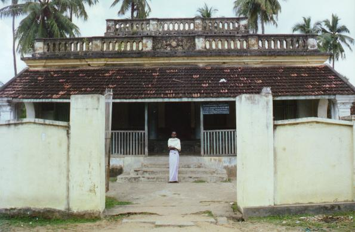
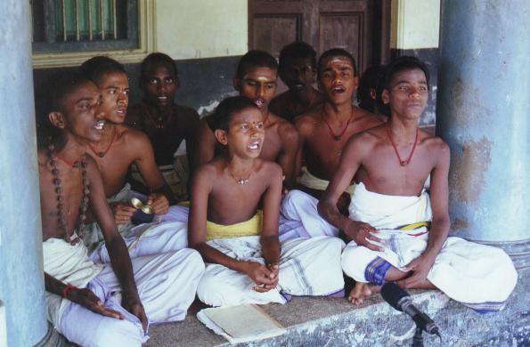
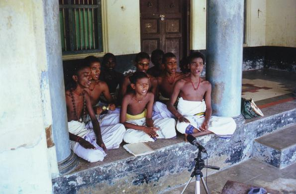

In february 2000, this school is having 1 teacher (Mr caṅkaranārāyaṇaṉ) and 12 students who follow a 5 years syllabus (see below).
From the left to the right:
1. piracaṉṉā (5th year, age 21),
2. parvatinātaṉ (4th year, age 19),
3. centil (2nd year, age 17),
4. caṅkaraṉ (2nd year, age 17),
5. vikkiṉēṣ (1st year, age 12).
[Picture taken
on Friday, 11th february 2000 (by jlc)
after recording 17 audio items
by these 5 students]
Pictures taken on 17/02/2000
 


The school adress is:
tarumapura ātīṉa tēvāra pāṭacālai
tarumapura ātīṉam
tarumapuram, mayilāṭutuṟai -- 609 001
tel. +((91)) (04364) 23207
The school location is:
11 deg. 06,40 N
79 deg. 40,42 E
In her Ph.D. thesis, Mrs Elisabeth Barnoud-Sethupathy gives the 5 years Syllabus for the school as being the following 211 patikam-s (reproduced here thanks to her kind courtesy)